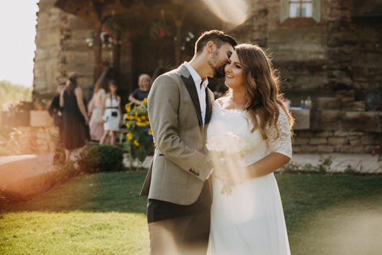

Romantische Gartenhochzeit
Eine wunderschöne Feier im Freien, umgeben von blühenden Blumen und strahlendem Sonnenlicht. Die Zeremonie fand unter einem großen alten Baum statt, und die Dekoration bestand aus zarten Pastellfarben und natürlichen Elementen.